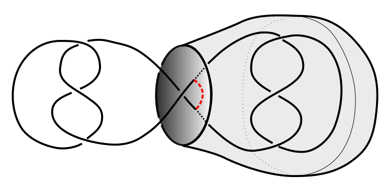
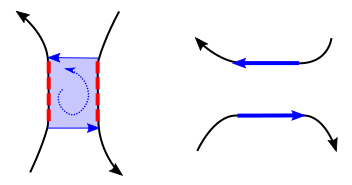
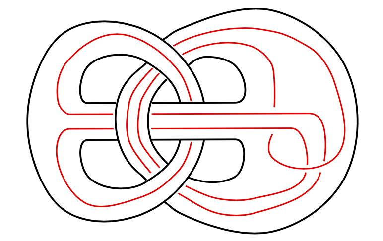
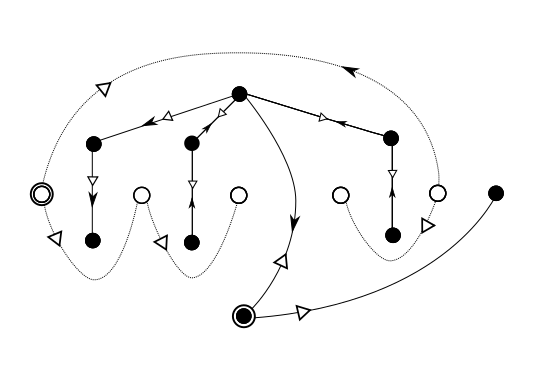

Research Acknowledgments
My work is currently supported by the National Science Foundation, DMS--2204148, and in the past by the The Thomas F. and Kate Miller Jeffress Memorial Trust, Bank of America, Trustee.
Here is a link to my papers on the arXiv. Authorship on all articles is alphabetical.
Preprints
Kenneth L. Baker, Allison H. Moore, Danielle O'Donnol, Scott Taylor. Signature, slicing foams, and crossing changes of Klein graphs. arXiv:2405.15044 [math.GT], 2024. arXiv, PDF
Allison H. Moore and Nicola Tarasca. Higher rank series and root puzzles for plumbed 3-manifolds. arXiv:2405.14972 [math.GT], 2024. arXiv, PDF
Tye Lidman and Allison H. Moore. Adjacency in three-manifolds and Brunnian links. arXiv:2308.06211 [math.GT], 2023. arXiv, PDF
Matthew Elpers, Rayan Ibrahim, and Allison H. Moore. Determinants of simple theta curves and graphs with involutive symmetry. arXiv:2211.00626 [math.GT], 2022. arXiv, PDF
Kenneth Baker, Dorothy Buck, Allison H. Moore, Danielle O’Donnol, and Scott Taylor. Primality of theta-curves with proper rational tangle unknotting number one. arXiv:2201.08213 [math.GT], Submitted, 2022. arXiv, PDF
Articles
Artem Kotelskiy, Tye Lidman, Allison H. Moore, Liam Watson, Claudius Zibrowius. Cosmetic operations and Khovanov multicurves. arXiv:2109.14049 [math.GT], Accepted at Mathematische Annalen, 2023. arXiv, PDF
Tye Lidman, Allison H. Moore and Claudius Zibrowius. L-space knots have no essential Conway spheres. Geometry & Topology 26:2065–2102, (2022). G&T, arXiv, PDF
Eugene Gorsky, Beibei Liu, Tye Lidman and Allison H. Moore. Triple Linking Numbers and Heegaard Floer Homology. International Mathematical Research Notices, rnab368, (2022). IMRN, arXiv, PDF
Eugene Gorsky, Beibei Liu and Allison H. Moore. Surgery on links of linking number zero and the Heegaard Floer d-invariant. Quantum Topology 11(2):323--378, (2020). Quantum Topology, arXiv, PDF
Stanislav Jabuka, Beibei Liu, and Allison H. Moore. Knot graphs and Gromov hyperbolicity. Mathematische Zeitschrift, 301(1):811–834, (2022). MZ, arXiv, PDF
Christopher Flippen, Allison H. Moore, and Essak Seddiq. Quotients of the Gordian and H(2)-Gordian graphs. Journal of Knot Theory and Its Ramifications 30 (2021), no. 5, Paper No. 2150037, 23 pp. JKTR, arXiv, PDF
Allison H. Moore and Mariel Vazquez. A note on band surgery and the signature of a knot. Bulletin of the London Mathematical Society, 52(6):1191--1208, (2020). BLMS, arXiv, PDF
Allison H. Moore and Mariel H. Vazquez. Recent advances on the non-coherent band surgery model for site-specific recombination. In Topology and geometry of biopolymers, volume 746 of Contemporary Mathematics, pages 101–125. Amer. Math. Soc., Providence, RI, (2020). Contemporary Math, arXiv, PDF
Tye Lidman, Allison H. Moore and Mariel Vazquez. Distance one lens space fillings and band surgeries. Algebraic & Geometric Topology; 19(5):2439--2484, (2019). AGT, arXiv, PDF.
Kenneth L. Baker and Allison H. Moore. Montesinos knots, Hopf plumbings, and L-space surgeries. Journal of the Mathematical Society of Japan, 70(1):95--110, (2018). J. Math Japan, arXiv, PDF
Tye Lidman and Allison H. Moore. Cosmetic surgery in L-spaces and nugatory crossings. Transactions of the American Mathematical Society, 369(5):3639--3654, (2017). Transactions, arXiv, PDF.
Tye Lidman and Allison H. Moore. Pretzel knots with L-space surgeries. Michigan Mathematical Journal, 65(1):105–130, (2016). Michigan, arXiv, PDF
Allison H. Moore. Symmetric unions without cosmetic crossing changes. Advances in the Mathematical Sciences: Research from the 2015 Association for Women in Mathematics Symposium, volume 6, pages 103–116. Springer International Publishing, Cham, (2016). Advances, arXiv, PDF
Allison H. Moore and Laura Starkston. Genus-two mutant knots with the same dimension in knot Floer and Khovanov homologies. Algebraic & Geometric Topology, 15(1):43–63, (2015). AGT, arXiv, PDF
Thesis
Allison H. Moore. Behavior of knot Floer homology under Conway and genus two mutation. PhD Dissertation, The University of Texas at Austin, May 2013.
Dissertation repository
Software
Braid Generator: Software to generate random braid representatives of a fixed knot type via Markov chain
M. Nasrollahi, S. Witte and A. H. Moore, June 2019
Project now publicly available on Github! and at PyPi.org.
Students
Graduate Students
Undergraduate researchers
I've had the privilege of working with many excellent undergraduate researchers. Here is a subset of them (and do please contact me if you don't see your name here and would like a shout-out!):
Current research opportunities
I currently have several projects in knot theory (both theoretical, applied, and computational) with opportunities for undergraduate and graduate research collaborators. Students with a genuine interest in topology and geometry and some background in linear algebra or coding will be most successful. Prior knowledge of knot theory is not required, and essential skills can be learned along the way. There are some funds to pay students an hourly wage. Students from underrepresented groups are especially encouraged to apply.
Currently enrolled VCU undergrads or grad students who are curious about research, a summer project, or interested in independent study, please get in touch with me by email (moorea14 at VCU dot edu).
Topological Molecular Biology
At UC Davis, I held a joint appointment in the department of microbiology and molecular genetics, as a postdoc with the Topological Molecular Biology lab. Part of my research at UC Davis was funded by the NSF, as part of the project "The dynamic genome: studying the interplay between local strand-passage and reconnection" under the direction of PI Mariel Vazquez. The long term goal of this project was to understand the global topological changes effected by recombinases and type II topoisomerases, with a special emphasis on understanding the effects of local reconnection and local crossing changes on the 3D organization of the genome.



